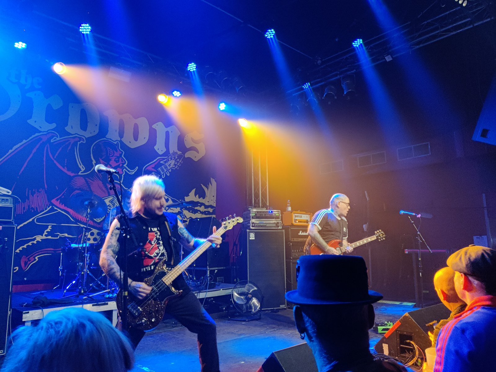
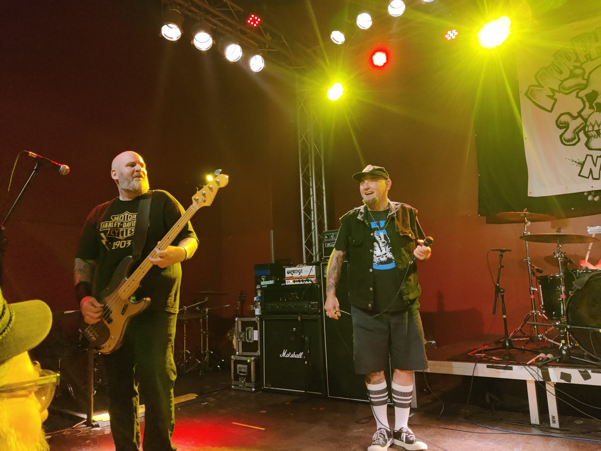
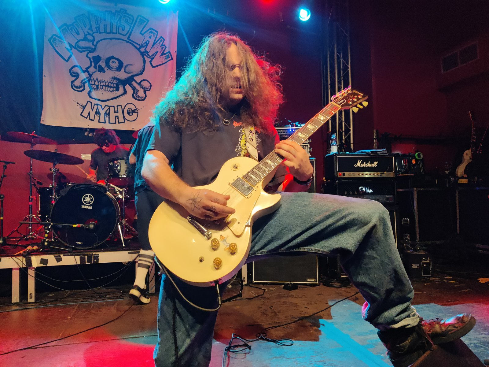
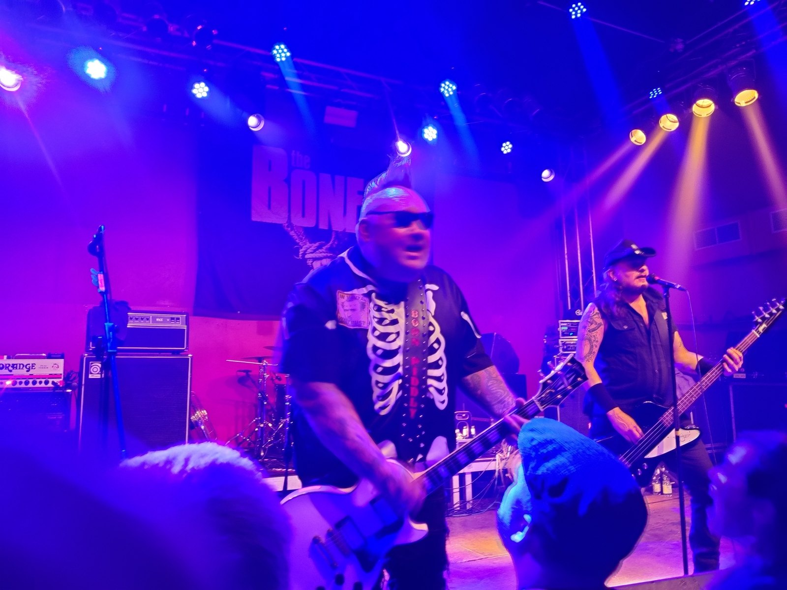
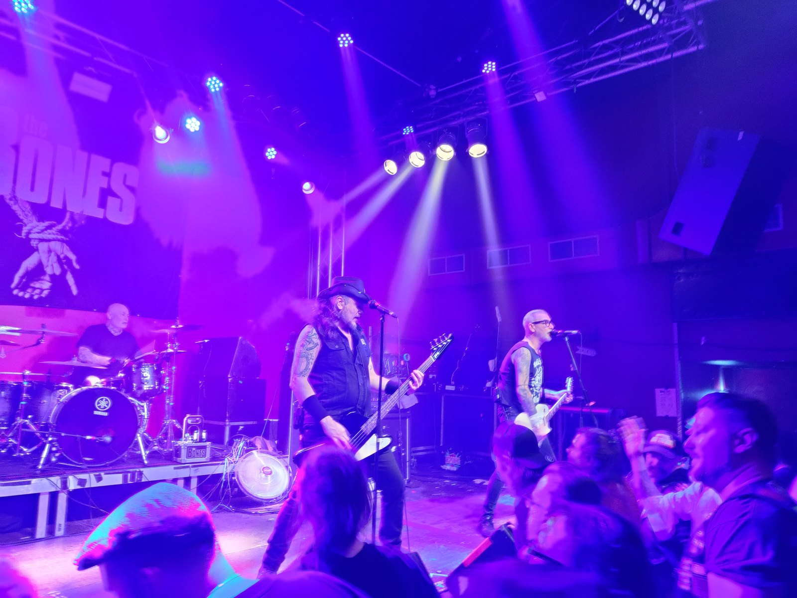

Konzertbericht
Bad Boys For Life Tour 2026 – The Bones, Murphy's Law und mehr im Turock
Text: Grindpa Heini
Samstag, · Turock, Essen
The Teflon Dons · The Drowns · Murphy’s Law · The Bones

Photos by: Grindpa Heini
So steht es auf der Karte. Und so machten wir uns dann – danke an meine Frau fürs zeitige Bestellen und Fahren – „nur“ zu viert (der übliche Absager eben) auf den Weg nach Essen.
Die Teflon Dons haben nur 15 Minuten gespielt, und die haben wir dann auch … nicht wirklich verpasst. Sagen wir mal: geschenkt.
The Drowns
The Drowns waren danach am Start. Hatte ich mal auf YouTube angecheckt, für ganz okay eingestuft, und genauso haben sie auch abgeliefert.
Nein, das wäre untertrieben! Die haben sich den Arsch abgespielt und eine sehr schöne Performance abgeliefert. Wurden auch zu Recht gut abgefeiert, aber der zündende Funke wollte bei mir nur bei der Coverversion von „Alternative Ulster“ überspringen.
Ich kann die Band eigentlich empfehlen. Die sind schon 'ne richtig geile Liveband. Liegt bei mir wohl am Geschmack, oder ich höre wirklich zu viel Geballer.
Murphy's Law
Als Nächstes dann Murphy's Law, eine NYHC-„Legende“, die aber auch viel durch den Ruf ihres Sängers Jimmy G. überlebt hat.
Kurz vorweg: ein sehr sympathischer Scherzbold, dem die Fans auch noch wichtig sind. Ein super junger Gitarrist und Schlagzeuger, die ihr Handwerk wirklich super beherrschen.

Photos by: Grindpa Heini

Photos by: Grindpa Heini
Die Mimik von Jimmy machte aber doch 50 % des Gigs aus. Mir ist da etwas zu viel fehlplatzierter Reggae-Anteil im Programm. NYHC kann eben auch anders präsentiert werden, da bin ich vielleicht auch wieder zu Old-School-orientiert.
Schönste Geste war natürlich, dass ich erst mal ein Bier von der Bühne in meinen Becher geschüttet bekam und hinterher noch ein Schluck vom Sänger stibitzt wurde. Großartige Aktion!
Der Gig war klasse (übrigens der zweite der ganzen Tour, also für alle Bands). Zu 'nem Einzelkonzert wäre ich jetzt nicht knapp 200 km gefahren.
Anyway, ich hab sie gesehen. War gut, okay.
The Bones
Jetzt der Headliner: The Bones!

Photos by: Grindpa Heini
Gesehen habe ich sie, glaube ich, an diesem Abend zum zwölften Mal. Lange waren sie nicht mehr live zu sehen, und auch die letzten beiden Alben fand ich nicht so prickelnd. Aber sie waren der Hauptgrund, warum ich da war.
Ich behaupte mal, dass nach den ersten zwei Minuten keiner mehr stillstand. Der Sound war übrigens bei jeder Band super. The Bones haben alles gegeben, und den Spaß hat man ihnen angemerkt.
Da wurden so viele Passagen vom Publikum mitgesungen, es wurde gedivet und eine schöne Zeit zelebriert. Einfach herrlich! PunkRock pur, und alle Hits, die erwünscht wurden, wurden auch gespielt.

Photos by: Grindpa Heini
Die 42 Euro haben sich mehr als gelohnt. Dazu noch eine fantastische Thekenmannschaft, immer freundlich und gut drauf, kein Stress, alte Bekannte getroffen, neue Menschen kennengelernt.
Abwechslungsreiches Line-up, geile Location.
Ein Samstagabend, wie er schöner nicht hätte sein können.
Das macht Spaß, das ist Leben, das ist Punk!
Vielen Dank!